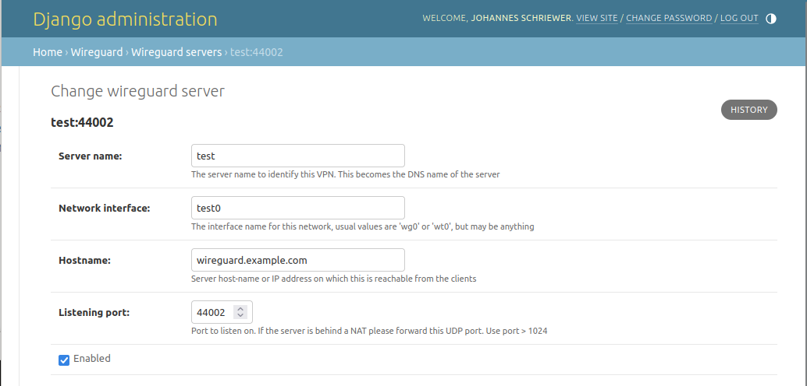
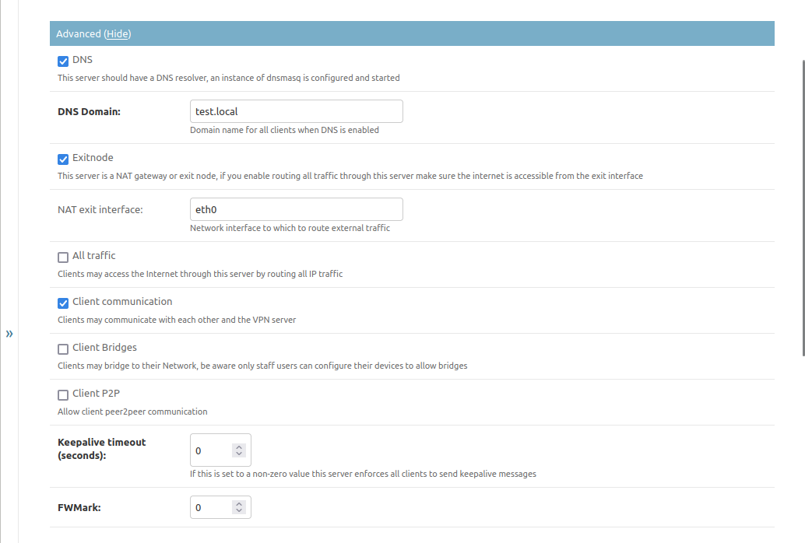
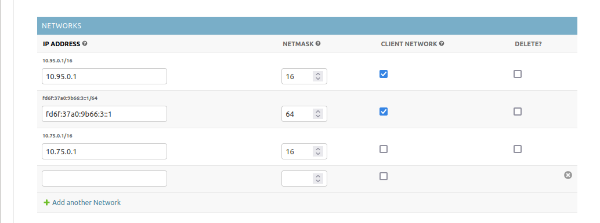
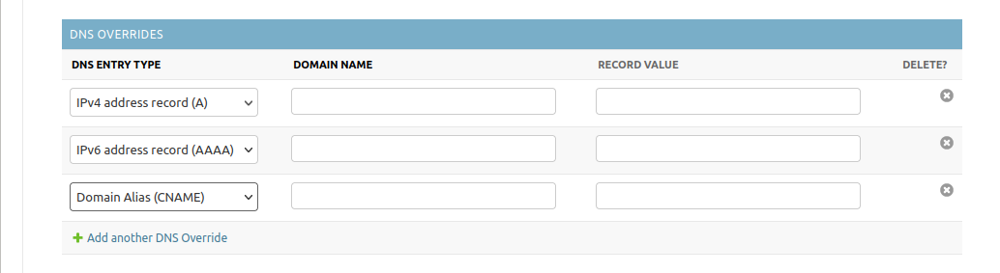
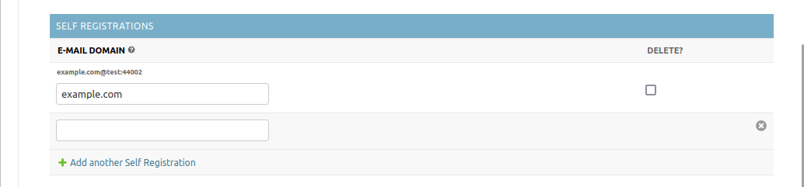

VPN Server/Endpoint configuration
Introduction
Initial VPN server configuration has to be done by using the Django admin pages right now. It is planned to create a UI for creating servers as well as it is implemented for clients/devices currently.
You can access the Django admin site by opening the URL /admin/ on your
domain. The superuser you created when setting the service up.
Basics
{kind=link}
Currently there are 4 mandatory basic settings that have to be filled to create a new VPN endpoint:
Server name: Name of the server that will be used in UI. This name will also be used as a DNS name (if DNS is enabled, see below) in a simplified version that can be used as a domain name (Django speak:
slugified)Network interface: The name of the network interface to use for the tunnel. A default WireGuard value would be something like
wg0orwt0but you can name your interface however you want, just make sure that it is unique on your system (so no two endpoints share the same name and no other network interfaces with that name should exist)Hostname: The publicly visible Hostname under which we can reach the Server this will be used for client configuration, so make sure you can reach the server under this hostname from a client.
Listening port: The UDP port to listen on for client connections. Make sure to use something bigger than 1024. This port has to be open in the firewall and should not be behind a NAT (use port forwarding !)
Enabled: If this is not checked the Tunnel endpoint is not started and will be removed from the active configuration on save. Clients will not be able to see or connect to this Endpoint.
Advanced Settings
There are some advanced settings here that might interest you. The VPN endpoint will run witout turning any of this on but you will be severely limited on what you can do with your VPN.
{kind=link}
DNS
If this is checked the service will run a dnsmasq service on the Tunnel
which will be configured to contain entries for all clients that may connect
to the endpoint as well as the server itself. If DNS queries are directed to
this service that the service has no information for it the query will cascade
to the nameservers that are configured on the host.
You’ll have to set DNS Domain to a domain name under which to register the
VPN clients. Please use something that has nothing other on it, because it might
get hidden by clients that register the same name. It is probably a good idea to
use a subdomain like vpn. for all clients to be registered on.
NAT/Exit nodes
If you want to allow clients to access other networks over this VPN you might want to enable Exitnode functionality. This is used by two features of the VPN:
When routing all traffic from a client over the VPN to an endpoint you need to have this enabled as it enables NAT functionality.
When you allow clients to be routed to networks they are not directly part of you’ll probably need it too or you will have to configure routing on the server as well as the clients.
If you enable the Exitnode function, you must tell the server to which network interface to route packets that cannot be routed locally. It is possible to “stack” networks this way, but be aware what you’re doing. Usually this is probably the interface on your server that has the default gateway or a configured IPv6 nexthop.
Allowing full VPN
If you enable All traffic then the clients will be shown an option to route all traffic through the VPN. This is probably useful for mobile devices like phones or tablets that should be secured on open networks. Be aware that communication with other devices on the same local network might break for clients enabling this setting without further configuration.
Client communication
If you enable Client communication you allow the clients to communicate with each other. If this is disabled, clients only get routes for the VPN endpoint itself and in case they allow all traffic through the VPN they will not reach other clients on the same VPN network but everything else.
Be aware that this is a configuration setting pushed to the client configuration. This will not stop a malicious client to modify their configuration to add a route to other clients. If you want absolute security against such a client you will have to set up firewall scripts for that by yourself currently. This might get fixed in the future but will mean that the service has to re-configure ip tables or firewalls and this could be more complex than thought.
Network bridging
If you enable Client bridges clients may provide routes to their networks for other clients to access. This is largely untested currently but should theoretically work just fine.
Be aware that clients have to re-download their configuration once other clients enable new bridges as they will need the routing information.
Only Staff or Admin users may configure their clients to provide bridges.
Peer 2 peer communication
Enable Client P2P if you want to allow the clients to connect directly if they are in the same local network instead of bouncing traffic through the server.
This will need a peering client application on the clients that participate in this and will be described in Peer2Peer communication
Enforced Keepalive
If you set anything but 0 on Keepalive timeout client keepalive timeouts
will be enforced. Only enable this if you have problems to reach clients from
the server. Clients will send an empty ping packet after roughly this timeout.
If you have problems with NAT connection tracking timeouts probably set this to 25 seconds. It is better to configure this for each client that provides services for others to access so they do not time out. If enabled the device in question might use more energy as it cannot turn of its modem or fail to go to a power saving mode and thus drain their battery faster.
Firewall marking
If you want to firewall traffic that stems from this tunnel you can have it
marked to be routed differently than other traffic. If set to 0 no marking
is happening.
Network settings
{kind=link}
This defines the networks the VPN endpoint provides or routes to. You’ll have two distinct sets of networks here:
Client networks: Clients will be assigned a random IP on this network on creation, so be sure to provide a big enough subnet for all clients here and make sure you set the netmask correctly
Routed networks: Networks defined here without the Client nework checkmark will do two things: The tunnel will be assigned the IP address set on the address field and clients will get a route to this network but no IP entry.
DNS Overrides
{kind=link}
DNS overrides will be written to the dnsmasq configuration when you enable
the DNS functionality in the Advanced section. They work as you would expect.
Self registration
{kind=link}
If you set one or multiple domain names here, this will enable users with an e-mail address on this domain to self-register for this server on the web UI.
Do not use something like gmail.com or outlook.com or any free e-mail
provider here as everyone can make e-mail addresses on them and will be able to
register and create clients on your VPN network then.
If no VPN endpoint has a self-registration entry, there are two additional options to get users onto the VPN:
Invite them with the invite form on the web UI (Only Staff and Admin users can do that)
Add the users in the Django admin directly, see User management
Another option would be to create all clients with an admin user and send the users their configuration via mail or some other channel.